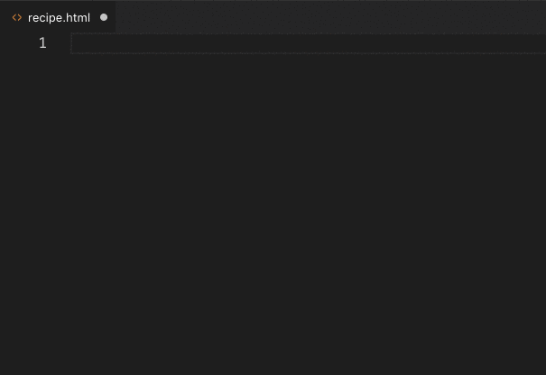
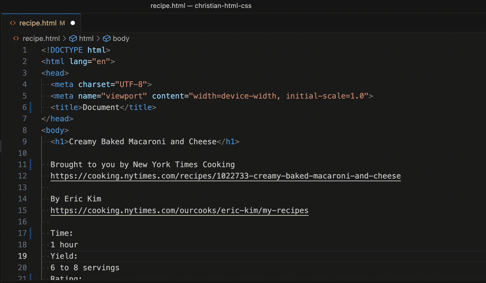
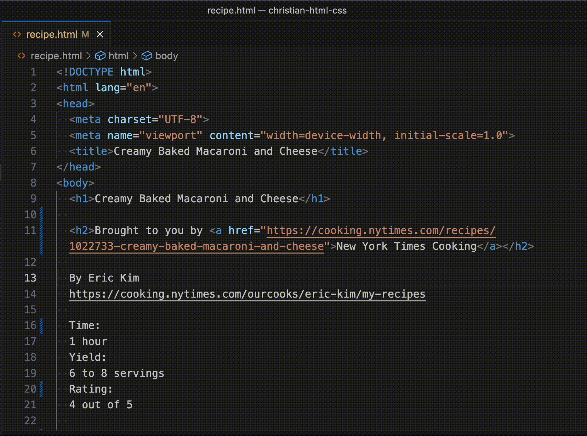
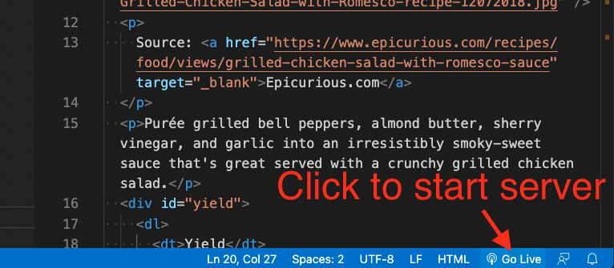
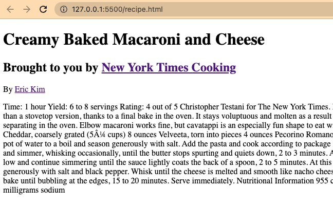
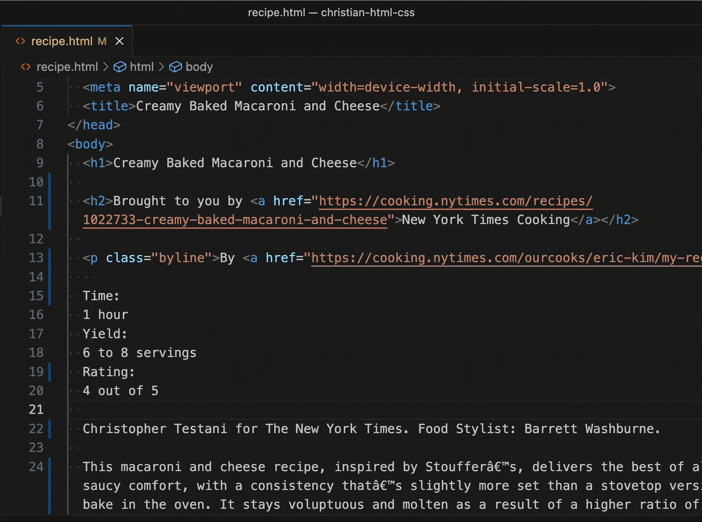
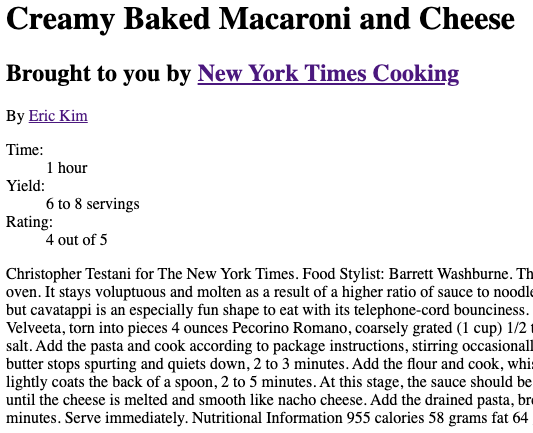
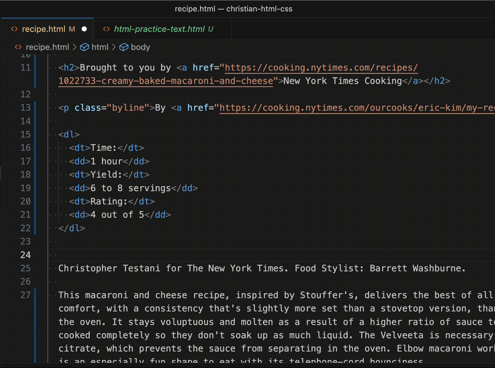

5 HTML practice
5.1 Tutorials
Do the tutorials noted below before you start on this project. Codecademy is a freemium platform were some lessons are free and others are paid. These modules outlined below should be free and you don’t need to do any paid modules, though you are welcome to do so. All the quiz material will come from free modules or our practice and mastery assignments.
- Sign up for a Codecademy account and find the Codecademy HTML tutorial.
- Do these “Lessons” within the Elements and Structure section:
- Introduction to HTML
- HTML Document Standards
- Semantic HTML
Just do the Lessons. You don’t have to do the quizzes or projects, unless you want to. While you’ll have time in class to work on the practice assignment, you should have already completed the Codecademy lessons for HTML.
5.2 Learning objectives
Not every nuance of HTML is explained here because you should be using knowledge gained from the above tutorials.
The goal of this assignment is to:
- Create a git repo on your local machine to keep code under source control.
- Create an online Github repo and create a connection to it with your local repo.
- Create a basic web page structure and content using proper HTML syntax and indenting practices.
- Learn some tips and tools within VS Code along the way.
5.2.1 Envision success
To meet the learning objectives, you’ll be “coding up” a recipe with HTML. When this portion is done, it will look like this in your browser:

Don’t worry … we’ll make it prettier in the next chapter.
Since that gif moves all about, here is a PNG of the rendered HTML.
{kind=link}
You might also look at the recipe that inspired the lesson: On NYT Cooking | Screenshot.
{kind=link}
5.2.2 Resources
You have the internet at your disposal for help, though I ask that you not use Copilot or any AI tools. Here are some resources you might find useful.
- You can review steps in the Codecademy Learn HTML course.
- You can look up specific resources in the W3 Schools HTML documentation. Mozilla also has good docs.
- Google it.
5.3 Project setup
You need to create a new project folder like you did in our last couple of chapters Project setup and Using Git but applied to this new project.
- Create a project folder and name it
yourname-html-css. - Add your
README.mdand.gitignorefiles, including the contents. - Initiate your local repo, create your Github repo and connect them.
5.4 Build a recipe web page
We’re going to build the HTML structure for the recipe page noted above. I’ll supply the text that you need to turn into HTML markup. While there are AI tools that could do all that work for us, you wouldn’t learn chat-shit from that. We’re going to code this up with VS Code so we can talk about the elements as we go along.
In our first pass here, we’ll mark up the text items for what physically are … their HTML bone structure. We’ll add some semantic tags a little later.
5.4.1 Create the file
- Create and save a new HTML document called
recipe.html. You can use thetouchcommand to do this.
Next we need the basic elements required for an HTML 5 document. There is a super easy way to do this thanks to a special thing in VS Code called Emmet.
- At the top of the file, type
htmland you’ll see some selections come up. Use the arrow key on your keyboard to choose the optionhtml:5and hit return. You should get all the boilerplate elements you need for an HTML page.

5.4.2 About indenting code
A quick aside here: Notice how that boilerplate HTML code is formatted. Tags that are inside of one another are indented to show their relationship. This is shown with the <meta> tags inside the <head> tag.
As you write code in VS Code it will try to do this for you, and you need to let it help you. This indenting syntax is super helpful as code gets more complicated.
Strive to write beautiful code.
5.4.3 Collect the text
Now to save some mindless typing, I’ve saved a copy of the unstyled text for you.
- Control-click on this link to open the text we need into a browser window, then highlight and copy the contents.
- Paste the contents in between the
<body>tags of yourrecipe.htmldocument.
5.4.4 Headlines
The first line in our text is the headline of the article, and that next needs to be in two places in our HTML document:
- Copy the text “Creamy Baked Macaroni and Cheese” and paste it inside a
<title>tag in the head of the document. The<title>tag is what’s displayed in the tab of your browser. - Go back to the body of the text and add
<h1>tags around that line to make a main headline.
When you created the <h1> tag, VS Code likely added both the opening and closing h1 tags, and you had to cut ‘n’ paste or delete/retype the closing tag in the correct place. Let’s introduce Emmet, which is a shorthand syntax and tool for programmers to help write code. It is baked into VS Code.
We’ll use the next line “Brought to you by New York Times Cooking” as a h2 headline, and we’ll want to use an anchor tag around “New York Times Cooking” to link to the original recipe. We’ll use Emmet to help use write the code.
There are two parts to using Emmet to mark up existing code, after highlighting your text:
- You invoke the Command Palette in VS code and choose the Emmet: Wrap with Abbreviation function
- Then you type in the tag or tags to apply based on Emmet shorthand. The shorthand isn’t hard as it is based mostly on the tags themselves without the angle brackets.
Let’s show an example of how it works. I do this in two steps … I apply the <h2> tag to all of the text, and then apply an anchor tag <a href=""> to just the name of the publication.
Watch what happens to the code (line 11) as I choose which tags to apply.

Here is how you do the same:
- Highlight the text “Brought to you by New York Times Cooking”.
- Do command-shift-p to bring up the Command Palette in VS Code. (Control-shift-p for Windows.)
- Begin typing in the text “Emmet: Wrap” and you’ll see the list of commands filter down. Use your arrow keys to select Emmet: Wrap with Abbreviation and hit return. That list of commands will go away but a new box will appear so you can type in the next command.
- Type in the text
h2and hit return. This will wrap your text in both the beginning and ending<h2>tags. - Now, do the same thing to apply the anchor tag around the text “New York Times Cooking”. The Emmet tag for anchor is just
a.
Emmet is really cool, but it only helps you write the code you already know you want. In other words, you have to know HTML syntax before you can use Emmet’s shorter syntax to write it. Luckily it’s not hard to figure out. Some useful resources for Emmet:
5.4.5 Adding class
The next line of our file is the byline for the recipe article. The byline is a simple text element, so it should be inside a <p> tag, but we will add a “class” to this element so we can target it later as CSS.
I’m not going to get into what a class is just yet as that is the next lesson, but I do want to show how Emmet allows us to add a class while marking up text. This time I’ll give the steps, then show it.
- Highlight the text “By Eric Kim”.
- Do command-shift-p to bring up the Command Palette.
- The Emmet: Wrap with Abbreviation command is probably at the top since you used it last, so you can just hit Return.
- For the Emmet syntax, use
p.byline.
The p part is to add the <p> tag. The . says to add a “class” designation to the element, and byline is the class name we are applying. If we wanted to add an id= instead, it would be p#byline.

For the last part of the byline here, you need to wrap the authors name with a link to his NYT profile.
- Use Emmet to create the
atag around “Eric Kim” and use the provided URL as thehref.
5.4.6 Live server
You will want to occasionally check to see how your code is displaying in a browser to make sure everything is working as expected. One way is to open the html file in Chrome (File > Open File) and the refresh each time you want to see an update. But there is a better way: When we did our computer setup you should’ve installed a VS Code extension called “Live Server”.
- Click on the “Go Live” button at the bottom-right of VS Code

This will create a web server on your computer and then open the current file in your default browser. As you make changes to the HTML and save it, the page automagically updates in your browser.
Your page should look something like this at this point:

I suggest now get in the habit of saving your work after each section we work through here, and then check your live server to see how it looks.
5.4.7 Description lists
This next bit of text we need to put together as a description list, which is a special list construct where you have a “term” and a “description”. Look at that this W3schools link to see how it works.
The description list is a little different because the list “items” come in two parts, the <dt> tag for the “term” and the <dd> tag for the “description” of the term. We can use Emmet to get us real close with the text we have, but we’ll need to do a little correction at the end.
With this Emmet command we’ll introduce child elements and multiplication. By using the Emmet shorthand dl>dt* I’m saying “Wrap all of this with a <dl> tag, then inside of that (the >) wrap the elements with <dt> tag, multiplying for all the items (the * part.)
Watch what happens to the text as I add each part of the command. Note I don’t get exactly what I want since I can’t alternate the <dt> and <dl> tags (or at least I don’t know how), so I fix those manually.

Now you need to do the same with your code.
- Use the emmet syntax
dl>dt*to wrap create your description list. - Manually fix the descriptions to use
<dd>tags.
Your page should look like this when you are done.

5.4.8 Images
In our text we have a caption for a photo, but not the photo itself. We need to download it.
- Click on the download link below.
{kind=link}
- Save (or move) the photo into your project folder right next to
recipe.html.
5.4.8.1 About figures
One of your Codecademy lessons was about Semantic HTML, and we’ll apply some of that here. From our lessons, we know that the <img src=""> tag can display an image, but to make this image accessible and useful to all users of the web, we need to add an alt= attribute to describe the image with words. It’s also best to wrap both the image and caption in a semantic <figure> tag so screen readers understand what that the image and caption go together.
So far, we’ve used Emmet to wrap existing code, but we can also write shell code using Emmet. In some cases we can tab through the written parts to fill in context.
Again, this might be helpful to see before you do it on your own. This is me adding the figure, img and figcaption tags we just talked about, and then filling the values. There is a lot of “tab” keying here you don’t see.

OK, here are the steps for you:
- On a blank line above the caption in your text, add the following Emmet syntax, then use tab to complete it.
figure>img+figcaption- Use your tag key to type in the path to the image, then the alt attribute as show in the gif above.
The new thing we added with that syntax is +, which says we want both an <img> and <figcaption> tag inside the figure.
5.4.9 Paragraphs
Our next bit of text in our file is the recipe introduction, which is just text. We want to mark this up as paragraph and class the element as “intro”. You did this before with the byline.
- Code the intro with the Emmet syntax
p.intro.
If you had multiple paragraphs, you could highlight all the text and use the shorthand p* to code each individual paragraph.
5.4.10 Unordered lists
Our ingredients list needs to coded where the headline is an H3 tag and the actual ingredients are in an unordered list.
- Code the “Ingredients” subhead as an H3
- Use the “Emmet: Wrap with Abbreviation” command with the syntax
ul>li*to code the ingredients list. - Soe the same for the “Nutrition” section further down the page.
5.4.11 Ordered lists
The preparation steps are similar to the ingredients and nutrition, but the items need to be in an “ordered” list to show the step numbers.
- Code the “Preparation” subhead as an H3
- Use Wrap with Abbreviation on the steps, with
ol>li*
5.4.12 Semantic blocks
Now, if you check your live server again your page should look like the example shown at the beginning of this lesson, but we aren’t quite done yet.
In the Semantic HTML lesson you learned that we use some HTML tags to designate parts of pages so screen readers and other enabling software can understand our pages. We can also utilize those tags later when we style pages with CSS.
While we don’t have a full website page here with navigation and such, I want you to mark up the parts of the pages that we do have:
- Add an
<article>tag that encapsulates everything within our<body>thus far. So it should start right after the opening<body>tag and close right before the closing</body>tag. - Use a
<header>tag to wrap the code starting at the main headline and ending after the definition list. In other words, stop it before the<figure>tag, which we’ve already added. - Add separate
<section>tags around the Ingredients, Preparation and Nutrition sections. Each of those sections should be inside their own<section>tag. - Add a new
<footer>tag and child<p>tag after the closing</article>tag. Inside the paragraph tag, add the text “A class project by First Last” but with your name.
5.5 Commit and push your code
Save, add, commit and the push your code to your repo in Github. To review, the steps are:
- Use
git statusto check the status of your files. You probably have two untracked files, your html and your image. - Use
git add .to add all the untracked files. - Use
git commit -m "your message here"to commit your changes, but write your own short message that explains what you have done with this commit. - Use
git push origin mainto push them to Github.
5.6 Turn in your work
Turn in a link to your repo in the assignment in canvas.